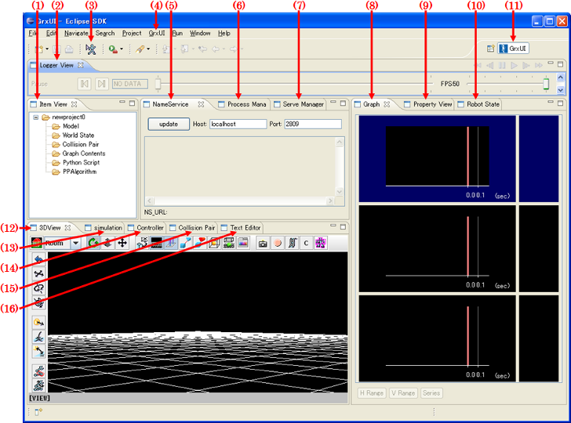

Overview of User Interface
Here we describe the various elements that compose OpenHRP user interface (so called GrxUI).
When GraUI is started, you will get a window as shown in following figure.

Operations in tab-view
- You can change the size of the tab-views by dragging an edge.
- Change the location of tab-views by drag-and-drop operation.
- Drag-and-drop a tab-view out of the main window, so it will be popped-out as an individual window.